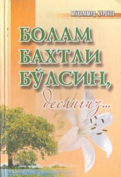

BBFarzand tarbiyasi va ularni baxtli qilib voyaga yetkazish bo'yicha amaliy qo'llanma.
Ushbu kitob ota-onalarga zamonaviy pedagogik bilimlar asosida farzand tarbiyalash, ularni mustaqil hayotga tayyorlash va baxtli bo'lishga o'rgatish bo'yicha ilmiy tavsiyalar beradi. Asarda bugungi globallashuv davrida bolalarni turli salbiy ta'sirlardan himoya qilish, ularda sog'lom e'tiqod va yuksak fazilatlarni shakllantirish masalalari yoritilgan.